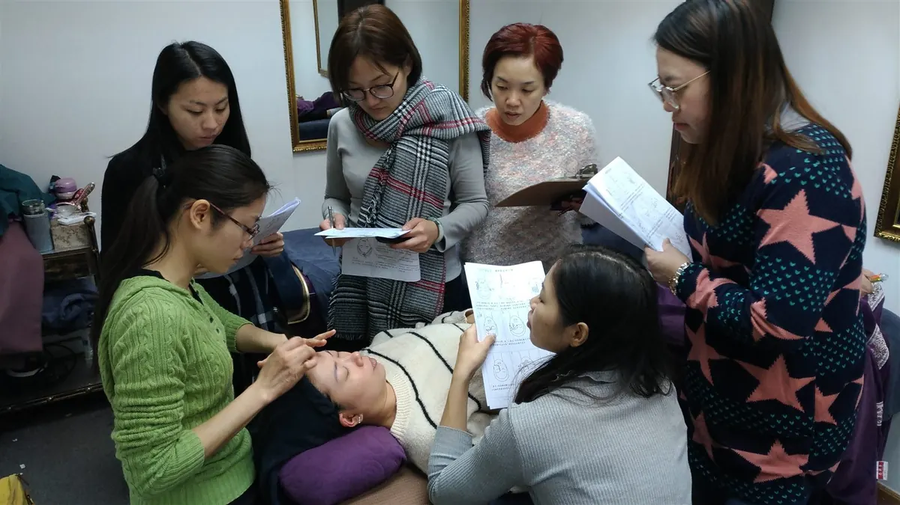

The Bojin Journal · Myths & real talk
Gua Sha Not Working? Check Expectations, Comfort, and Technique

You put the stone down, look in the mirror, and look again. Your face still looks like your face. That can feel disappointing when the videos made a change look obvious. It does not tell us that you have failed, or that one missing trick will fix everything.
If gua sha seems not to be working, start with the result you expected, then check comfort and the instruction you are following. More pressure, more passes, and a different tool are not automatic answers.
Start with what you hoped would change
Maybe you wanted a few quieter minutes. Maybe your jaw feels held at the end of the day. Or maybe you expected the sharper outline you saw in a before-and-after photo. Those are different reasons to pick up a tool, and they need different ways of judging the experience.
A routine can feel pleasant without producing a visible change. A photograph can look different without proving that the routine caused it. You do not have to reinterpret either one as a dramatic result.
Ask: what was I hoping to notice, and is this routine actually a good way to pursue it? That question is more useful than assuming you have not pressed hard enough.
Five checks before you change your routine
This is a review of your routine, not a new massage sequence. You can work through it without touching your face.
- Name the result you are waiting for Write down what you hoped would change: a relaxing pause, the feeling of held tension, or a visible change. Do not treat these as the same outcome.
- Check comfort before changing technique If your skin is sore, itchy, burning, or irritated, stop. Do not use another pass to test whether the area will settle. If a product seems responsible, stop using it and follow the product-reaction guidance linked below.
- Review one demonstrated placement Use instruction for the practice and tool you actually have. If you cannot identify the contact area and angle from the demonstration, pause rather than improvising around the eyes or neck.
- Keep the comparison fair If you choose to compare appearance, use similar lighting, camera distance, expression, and time of day. A different photograph alone cannot tell you what caused a change.
- Choose the next step without escalating Keep a comfortable routine only if you value it. Take a break if you do not, and seek professional advice for persistent discomfort or concerning symptoms. Buying another tool or pressing harder is not a required next step.
If a glide product leaves your skin red, itchy, or swollen, do not keep adding it to make the tool move. The American Academy of Dermatology explains how to test skin-care products and respond to a reaction. That guidance concerns product tolerance; it does not establish that facial massage is right for you.
For the practical questions separately, see slip and dragging, comfortable pressure, and when to skip Bojin. A new or unexplained symptom deserves appropriate advice, not a harder routine.
What research can and cannot tell you
A 2025 randomized study by Ahn and colleagues assigned 34 women aged 20–50 to gua sha or facial-roller routines for eight weeks. It reported changes in measured facial contours in both groups, with different findings for muscle properties and skin elasticity.
That is a small, specific study of two routines. It did not test this Bojin Method or include women over 50, and it cannot promise your result or a personal deadline. The study schedule is not a recommendation to copy its frequency. It also does not justify claims here about better serum absorption or permanent lifting.
You may decide that a comfortable ritual is worthwhile even without a visible change. You may also decide it is not doing something you value. Either is a reasonable decision; you do not owe a tool a longer trial because you already bought it.
Would switching to Bojin solve it?
Gua sha is a practice, not simply a flat stone. The Bojin Method is a distinct practice taught through demonstrated sequence, angle, and placement. Sharing a facial self-care context does not make the two interchangeable.
If what you want is clearer instruction, you can look at how this method is taught. That is a reason to explore a lesson, not evidence that Bojin will give you a better cosmetic result. Read the Bojin and gua sha comparison before deciding whether another practice fits what you want.
Quick answers
Why am I not seeing results from gua sha?
A lack of visible change does not identify one cause. Your goal may differ from what the routine can offer, the effect may be too small to notice, or the routine may not suit you. It is not proof that you need more pressure or a new tool.
How long should gua sha take to work?
There is no reliable personal deadline this guide can promise. One small study assessed changes after eight weeks under a defined protocol; it did not establish when you should see a change or test this Bojin Method.
Should I press harder if nothing changes?
No. More pressure is not a dependable way to get a better result. Stop if contact hurts, catches, or leaves your skin irritated; do not chase redness as a sign of success.
Is Bojin the same as gua sha?
No. Gua sha is a practice, not simply the name of a stone. The Bojin Method is taught as a distinct practice with its own demonstrated placements. A gua sha tool does not make the two methods interchangeable.
What does the free Eye Reset video show?
The free three-minute Eye Reset video teaches the Inner Brow Release. It is an introduction to one Bojin placement, not a full-face gua sha sequence or a promise of the same result for every viewer.
See one Bojin placement before deciding
The free three-minute Eye Reset video teaches the Inner Brow Release. It lets you see the demonstrated contact and angle for that placement. It is not a full-face gua sha routine, and you do not need to buy a different tool just to watch.
Explore the free Eye Reset videoYu-Ting Lan is a Taiwan-based international bojin instructor and the founder of Héhé Studio. She has taught her bojin method to more than a thousand students, from complete beginners to grandmothers, across Taiwan, Hong Kong, and Malaysia.